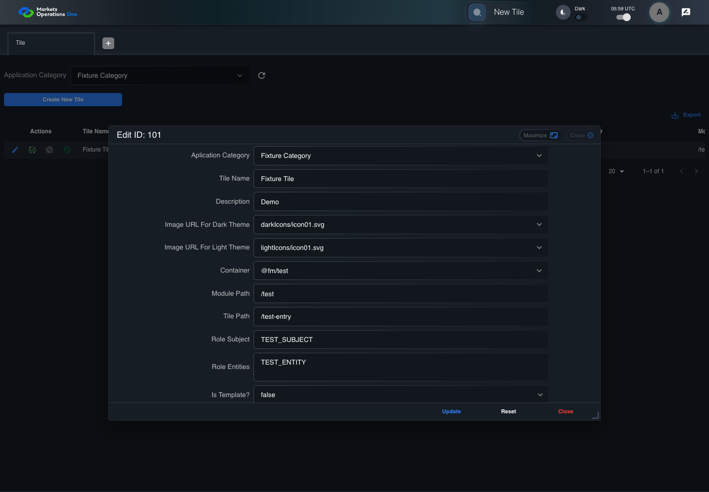

UI-ADM-TIL-005 actual administration UI with step evidence
PASS · application/run-050/ui-adm-til-005-actual-administration-ui-with-step-evidence-b0b715747fbb-attempt-1 · ACTUAL_APPLICATION_LOCAL_SERVICES
Actual current React administration screens. Controlled browser login supplies UI-ADMIN-01 and TEST_OWNER, or the declared SUPER_USER. Controlled BFF routes return the case-declared records. Other controlled saves persist submitted field values. This run establishes frontend handling only. It does not execute BFF validation, storage, audit generation, or authorization.
2026-10-22T05:59:54.600Z to 2026-10-22T06:00:00.806Z
Assertions and result · Artifact manifest · Exact run inputs and source hashes
Result SHA-256:cf3e93db240312bb63f2c548ab31f5e8e17f3ea520f657173d25fe938e380022Machine observations
- ui-origin-admin-requests.json
4723e70ea922b6fa44088d0227f2684aa71e961ed000eb9412afe95c1e1af5b3
Screenshot capture: CAPTURED. Named frames: 10.
Step screenshot evidence: COMPLETE. 9/9 canonical steps have execution screenshots.
Canonical step timeline
Given Admin A is authenticated as fixture UI-ADMIN-01 with the case-specific permissions
Execution: PASSED.1. step-01 Visible state after step 1: Given Admin A is authenticated as fixture UI-ADMIN-01 with the case-specific permissions
2026-10-22T05:59:56.271Z · 1440×1000
Step: /Users/lushevol/code/github/ratan-release-impact/workbench/tasks/ui-test-coverage-20261022/test-cases.md:8768
SHA-256:f9a6f2cf7e83886ad746206b1b6d5e5ed47cd30f72b95c8a67ed580d6facacd2And the Tile admin screen is open for UI-ADMIN-01; fixture record 101 is inactive and has Tile Name Fixture Tile; its owner is TEST_OWNER; Application Category Fixture Category is selected; the update response returns record 101 with Tile Name Changed Tile
Execution: PASSED.
2. step-02 Visible state after step 2: And the Tile admin screen is open for UI-ADMIN-01; fixture record 101 is inactive and has Tile Name Fixture Tile; its owner is TEST_OWNER; Application Category Fixture Category is selected; the update response returns record 101 with Tile Name Changed Tile
2026-10-22T05:59:57.417Z · 1440×1000
Step: /Users/lushevol/code/github/ratan-release-impact/workbench/tasks/ui-test-coverage-20261022/test-cases.md:8769
SHA-256:6caf4b878c70037ebcfe26b5b7d05b8934549804f2b2be83a9e833bfc3faaa65When Admin A clicks icon button named "Edit" inside row with Record Id "101" in the "Tile" administration data grid
Execution: PASSED.
3. step-03 Visible state after step 3: When Admin A clicks icon button named "Edit" inside row with Record Id "101" in the "Tile" administration data grid
2026-10-22T05:59:57.891Z · 1440×1000
Step: /Users/lushevol/code/github/ratan-release-impact/workbench/tasks/ui-test-coverage-20261022/test-cases.md:8770
SHA-256:ef78dac5acb382be7e516f5d381e1a341680bd5b8ad5a896a288fee5a995d2b1And Admin A replaces the value of textbox named "Tile Name" inside the dialog named "edit ID: 101" inside the "Tile" administration tabpanel with "Changed Tile"
Execution: PASSED.4. step-04 Visible state after step 4: And Admin A replaces the value of textbox named "Tile Name" inside the dialog named "edit ID: 101" inside the "Tile" administration tabpanel with "Changed Tile"
2026-10-22T05:59:58.025Z · 1440×1000
Step: /Users/lushevol/code/github/ratan-release-impact/workbench/tasks/ui-test-coverage-20261022/test-cases.md:8771
SHA-256:41441d0665c1a16e81049bde0ba62b2b2f650ab63421966100c5ae8536ee2f82And the declared controlled field clock advances by 300 milliseconds
Execution: PASSED.5. step-05 Visible state after step 5: And the declared controlled field clock advances by 300 milliseconds
2026-10-22T05:59:59.203Z · 1440×1000
Step: /Users/lushevol/code/github/ratan-release-impact/workbench/tasks/ui-test-coverage-20261022/test-cases.md:8772
SHA-256:9d916201935617f193874316fb52f086278a20c95be2c940a3234011706ff546And Admin A clicks button named "Update" inside the dialog named "edit ID: 101" inside the "Tile" administration tabpanel
Execution: PASSED.6. step-06 Visible state after step 6: And Admin A clicks button named "Update" inside the dialog named "edit ID: 101" inside the "Tile" administration tabpanel
2026-10-22T05:59:59.503Z · 1440×1000
Step: /Users/lushevol/code/github/ratan-release-impact/workbench/tasks/ui-test-coverage-20261022/test-cases.md:8773
SHA-256:047b1eefd53a47ce52208ff79da894f432fd36f4e32326c0797dc8acba2ce146Then cell named "Tile Name" inside row with Record Id "101" in the "Tile" administration data grid displays "Changed Tile"
Execution: PASSED.7. step-07 Visible state after step 7: Then cell named "Tile Name" inside row with Record Id "101" in the "Tile" administration data grid displays "Changed Tile"
2026-10-22T05:59:59.664Z · 1440×1000
Step: /Users/lushevol/code/github/ratan-release-impact/workbench/tasks/ui-test-coverage-20261022/test-cases.md:8774
SHA-256:070ed6fae3c892d08106bd97576b248b8ca81d0cb847bdb4f7ab003e2f3a2d01And the data row count in data grid with source identity "administration records" inside the "Tile" administration tabpanel equals its pre-action count
Execution: PASSED.8. step-08 Visible state after step 8: And the data row count in data grid with source identity "administration records" inside the "Tile" administration tabpanel equals its pre-action count
2026-10-22T05:59:59.915Z · 1440×1000
Step: /Users/lushevol/code/github/ratan-release-impact/workbench/tasks/ui-test-coverage-20261022/test-cases.md:8775
SHA-256:68550fe5753e87f05292a5a078dd7c9f3901c735e996998fac570f0bf667d3e1And dialog named "edit ID: 101" inside the "Tile" administration tabpanel is absent
Execution: PASSED.9. step-09 Visible state after step 9: And dialog named "edit ID: 101" inside the "Tile" administration tabpanel is absent
2026-10-22T06:00:00.018Z · 1440×1000
Step: /Users/lushevol/code/github/ratan-release-impact/workbench/tasks/ui-test-coverage-20261022/test-cases.md:8776
SHA-256:d6d28d1c1a7fe0f082145407a9f300b1b3127c801b03bb97821df2f0f542af8f
Additional named frames
The final visible state after the named test assertions.
2026-10-22T06:00:00.182Z · 1440×1000Step: Test source: /Users/lushevol/code/github/ratan-release-impact/workbench/e2e/audit-specs/admin-expanded.spec.ts:15
SHA-256:
4e7cb316f42d0632de67b9cc7146c5697e7c05da0861cc380e4be3d51d7cce22Screenshots establish visible state only. Assertions and traces support functional claims.